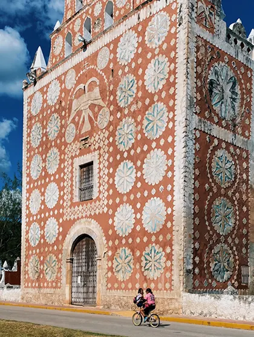
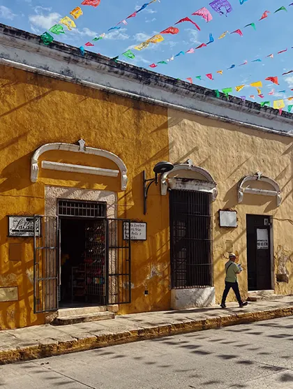
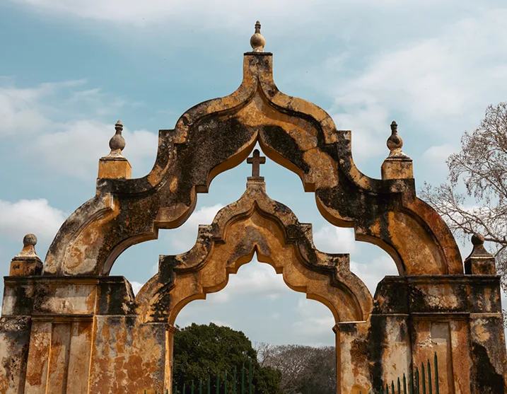

TRIP DESCRIPTION (JANUARY 17-21, 2024 / 4 NIGHTS)
Cabana and PRIOR’s spirit of unlocking beautiful homes leads us to the Yucatán Peninsula, a region of Mexico filled with lush vegetation, rich Mayan history and hidden haciendas. During your five day stay, explore archeological sites, beautifully restored haciendas and the rich architectural and cultural imprint left by pre-Spanish history; meet the local stewards of traditional weaving, wood carving, and embroidery; and taste the unique flavors of the Yucatán’s distinct cuisine.
Just outside of Mérida, the capital city of the Yucatán, the urban patina gives way to thick jungle filled with subterranean cenotes, pre-Hispanic ruins and sprawling haciendas built when the region was the center of the henequen, or sisal, trade. Some were left in ruins, while others have been restored magnificently into modern restaurants or palatial places to stay, including Hacienda San Antonio Millet, our homebase for this journey. Set in a secluded location just outside of Mérida, San Antonio Millet was originally known by the Mayan as ‘Red Hill-Mul Chac’, a cattle ranch until 1667 and later transformed into a working henequen plantation. By the 19th century, the hacienda went through an elaborate renovation with materials and objects brought in from France. Today, the current owners have carefully renovated each of the 11 guestrooms, including restoring the hand stenciled walls which took over three years to complete. During your stay, we will explore different areas of the hacienda with an al fresco dinner in the garden (using the property’s colorful ceramics made in Michoacan), aperitifs by the pool, and a private shopping experience under the arcade.
Next up we will visit the 17th-century church Santo Domingo de Guzmán, most striking for its colorful kaleidoscope-like facade. The church was built originally by the Spaniards to enforce their culture in Uayma, which was at the time an important Mayan center. As is common in Yucatán, stones from nearby Mayan temples were used in the construction, a theme we will see throughout the trip.
Later, venture into the laid-back town of Valladolid, home to some of the oldest colonial structures in the Yucatán. Here we will meet some of the region’s most noted artisans for embroidery and pottery and have a chance to commission custom designs. For lunch, we will head to the yellow city of Izamal for a private meal at Coqui Coqui Casa de los Santos. Known as the pueblo magico, Izamal is made up of three distinctive cultural histories — ancient Mayan, colonial, and contemporary Mexican. Coqui Coqui de Los Santos fuses these worlds with a design that pays homage to both the historical and religious importance of the region. We will also visit the nearby ateliers of designers who work with sisal and the artisans who make the area’s colorful animal figures. We will continue to visit some of the great haciendas of the region that represent the history of three great periods in the Yucatán Peninsula: the pre-Columbian period, the Spanish colonial period, and the booming era of henequen cultivation of the late 19th and early 20th century.

PRICING DETAILS
In order to confirm your reservation, a 50% non-refundable deposit is required at the time of the booking. The remaining balance will be charged 120 days prior to the beginning of the trip. For more information, please contact caravan@priorworld.com
-Double Occupancy Room (2 people in 1 room): $7,415 per person
-Single Occupancy Room (1 person in 1 room): $9,325 per person

INCLUSIONS:
-Accommodations at Hacienda San Antonio Millet, privatized for exclusive use
-All tours and admission costs throughout the itinerary
-All meals throughout the itinerary
-All transportation throughout the itinerary
-Gratuities
EXCLUSIONS:
-Airfare
-Arrival and departure transfers
-Any visa or travel requirements for entry into Mexico
-Travel Insurance
-Other meals and alcoholic beverages not stated in itinerary